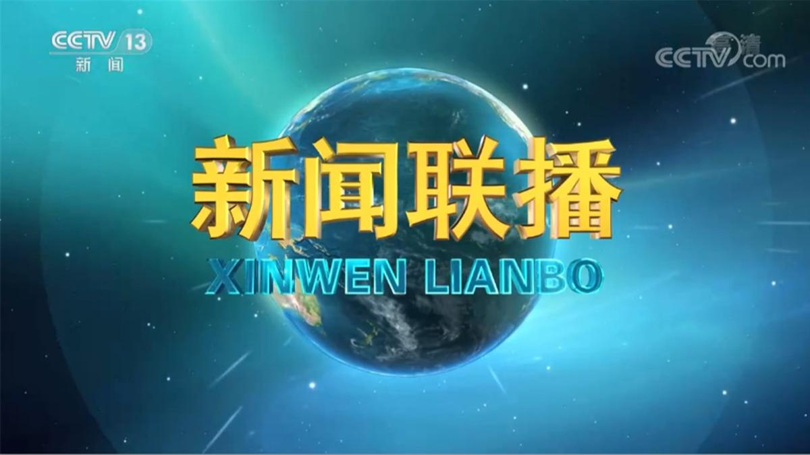
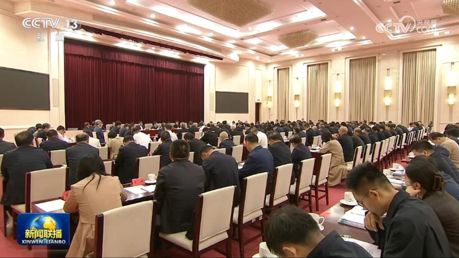
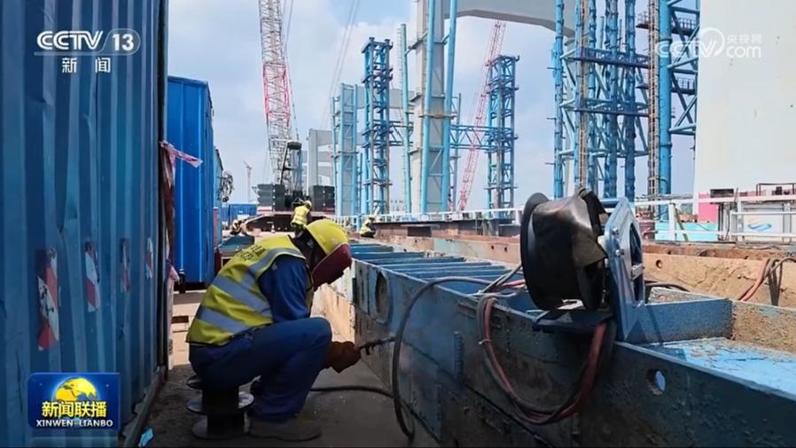
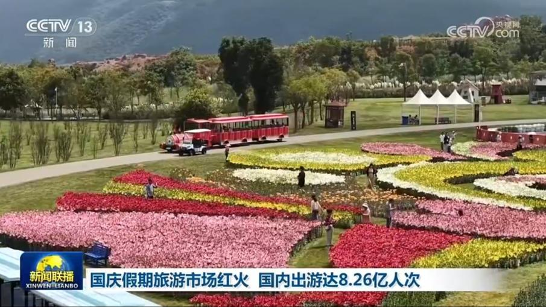
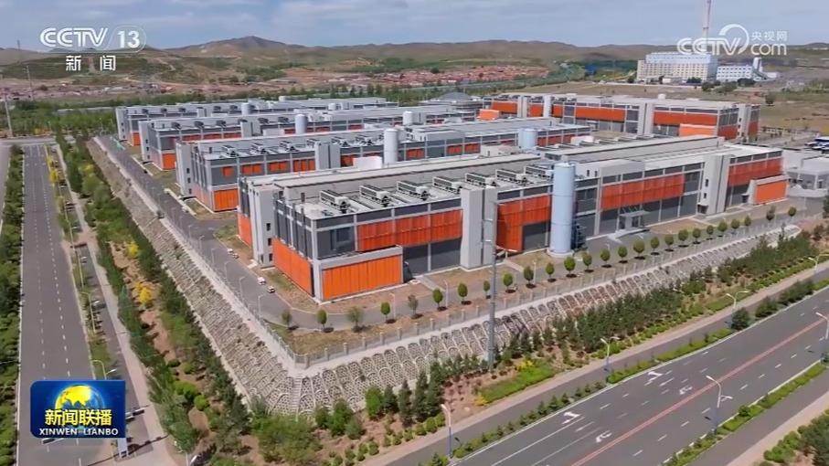
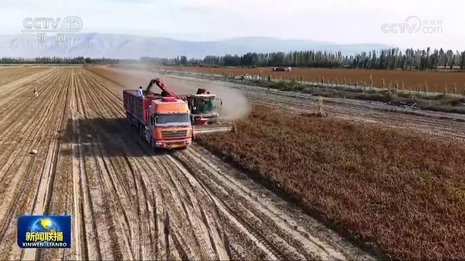
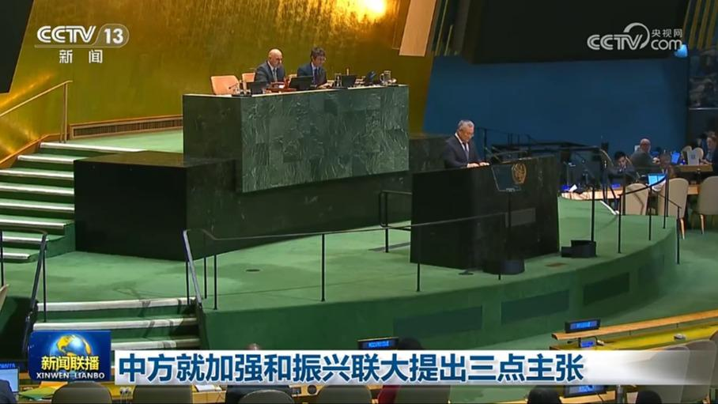
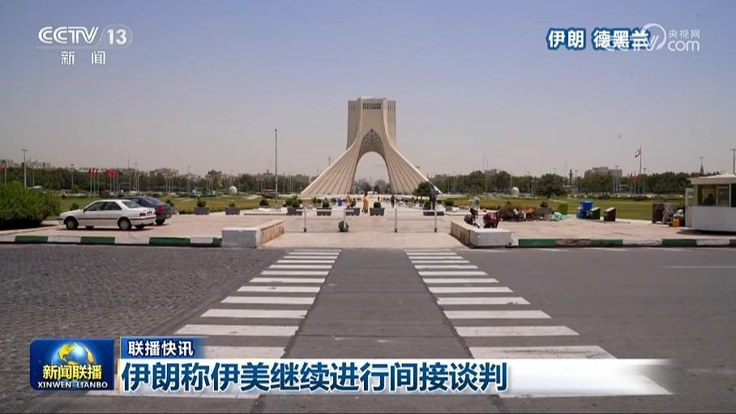

01
应习近平邀请 博茨瓦纳总统将访华
应国家主席习近平邀请，博茨瓦纳共和国总统杜马·希代翁·博科将于10月12日至17日对中国进行国事访问。

应国家主席习近平邀请，博茨瓦纳共和国总统杜马·希代翁·博科将于10月12日至17日对中国进行国事访问。
县域经济高质量发展是经济高质量发展的重要支撑，习近平总书记强调，发展各具特色的县域经济，培育一批农业强县、工业大县、旅游名县，促进农民群众就近就业增收。沿着总书记指引的方向，各地立足自身资源禀赋，积极发展特色鲜明、优势互补的县域经济，更好服务和融入全国发展大局。
日前，《中共中央 国务院关于发展新质生产力的意见》（以下简称《意见》）正式发布。

学习《习近平文化文选》第一卷、第二卷座谈会9日在京召开。与会代表认为，《习近平文化文选》第一卷、第二卷生动记录了以习近平同志为核心的党中央领导新时代文化建设的伟大历史进程，系统呈现了习近平文化思想的基本精神、基本内容、基本要求，为深入学习实践习近平文化思想提供了权威教材。
红军长征途经重庆留下了可歌可泣的英雄壮歌，也把伟大的长征精神镌刻在巴渝大地。新时代新征程，重庆广大干部群众传承红色基因，奋楫笃行谱写高质量发展新篇章。

财政部近日安排使用地方政府债务结存限额5500亿元，其中，一般债务结存限额3000亿元，全部分配县区使用，专门用于提高县区一般公共预算保障能力；专项债务结存限额2500亿元，分配给今年第四季度有实际项目资金需求的地区，并向经济大省倾斜，支持有关地区优先保障在建项目资金需求，新建项目聚焦“六张网”建设等重点领域，有效发挥政府投资带动作用。

国庆假期，文旅市场表现亮眼。文化和旅游部数据中心测算，今年国庆7天，国内出游8.26亿人次，出游总花费7383.75亿元。
今天（2026年10月9日）是第57届世界邮政日，今年邮政日的主题是“完善邮政服务网络，开拓行业无限可能”。国家邮政局数据显示，我国持续拓展网络覆盖，超过81%的建制村建成村级寄递物流综合服务站。如今，我国已建成世界上规模最大、覆盖最广、受益人数最多的寄递网络。京津冀、长三角、粤港澳大湾区、成渝地区、中部城市群等枢纽集群基本成形。……

眼下，随着国家新型电网、水网、算力网等“六张网”的建设向纵深推进，一些偏远地区的面貌正在发生变化，也给很多人带来了新的发展机遇。

我国将开展农业品牌保护专项行动

8日，第81届联合国大会举行关于执行联合国决议和振兴联大议题联合辩论。中国代表发言时表示，当今世界变乱交织，多重挑战叠加，联大应进一步凝聚共识、加强团结，履行好《联合国宪章》赋予的职责，推进联合国提质增效。
中国代表8日在第81届联大裁军与国际安全委员会一般性辩论发言时表示，今年是东京审判开庭80周年，当年日本以承认军国主义罪行、接受《联合国宪章》全部内容为前提加入联合国。但日本现政权否认侵略历史、美化战争罪行、对二战战犯顶礼膜拜，同时持续强军扩武，加速“再军事化”，已成为威胁地区和平稳定的突出因素。……
沙特主导的联军发言人今天（10月9日）称，摧毁了也门胡塞武装的3个导弹发射装置。沙特民航总局今天发表声明称，位于沙特首都利雅得的哈立德国王国际机场8日遭到两次袭击，目标分别为机场设施和沙特航空的一架客机。袭击造成3人死亡，多人受伤。目前，该机场航班已恢复正常运营。

伊朗称伊美继续进行间接谈判